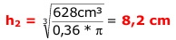

Aufgabe 72 Ein Zylinder hat einen Radius r1 von 5 cm und eine Höhe h1 von 8 cm. Er soll einem zweiten volumengleich sein, dessen Radius r2 und Höhe h2 sich wie 3 : 5 verhalten. Wie groß sind r2 und h2? V1 = п * r1² * h1 V1 = п * 5² cm² * 8 cm = 628 cm³ r2 3 --- = --- |*h2 h2 5 r2 = 0,6 * h2 V2 = п * r2² * h2 V2 = п * (0,6 * h2)² * h2 V2 = п * 0,36 * h2³ |:0,36 V2 ------ = п * h2³ |:п 0,36 V2 ---------- = h2³ 0,36 * п  r2 = 0,6 * 8,2 cm = 4,9 cm